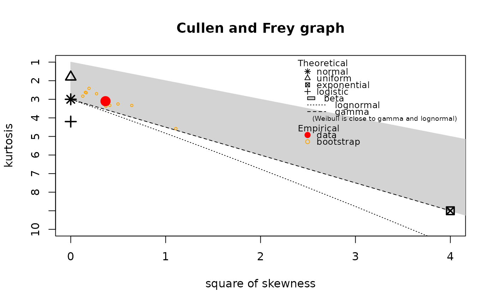
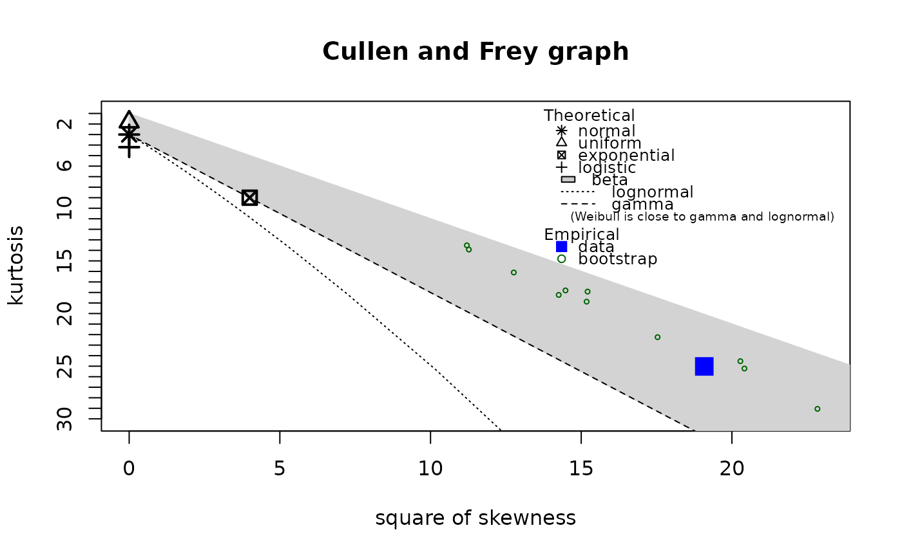
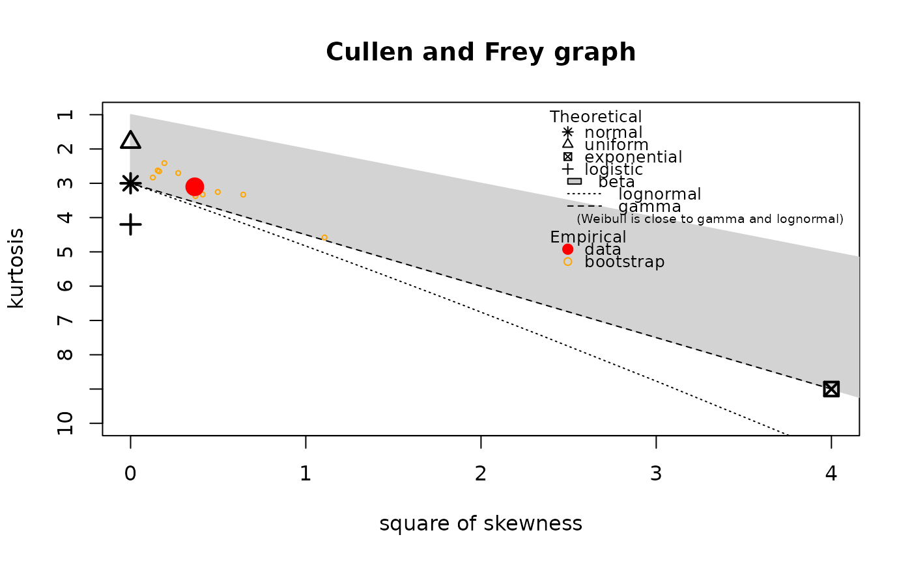
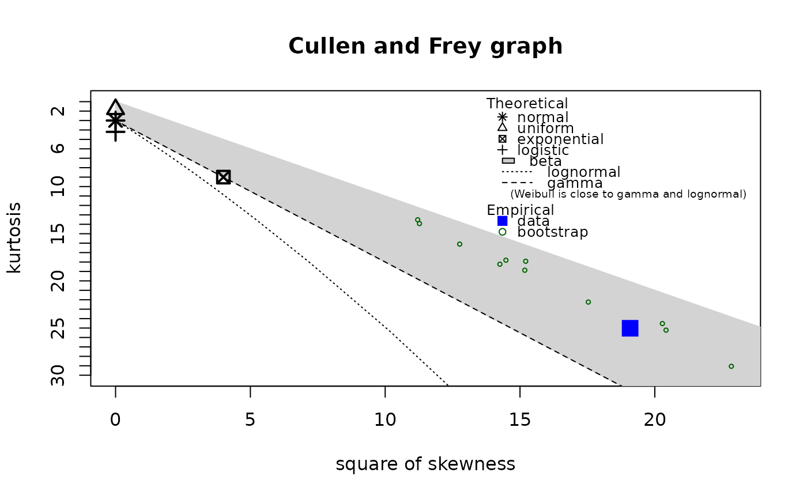

Description of an empirical distribution for non-censored data
descdist.RdComputes descriptive parameters of an empirical distribution for non-censored data and provides a skewness-kurtosis plot.
descdist(data, discrete = FALSE, boot = NULL, method = "unbiased",
graph = TRUE, obs.col = "darkblue", obs.pch = 16, boot.col = "orange")
# S3 method for descdist
print(x, ...)Arguments
- data
A numeric vector.
- discrete
If
TRUE, the distribution is considered as discrete.- boot
If not
NULL,bootvalues of skewness and kurtosis are plotted from bootstrap samples ofdata.bootmust be fixed in this case to an integer above 10.- method
"unbiased" for unbiased estimated values of statistics or "sample" for sample values.
- graph
If
FALSE, the skewness-kurtosis graph is not plotted.- obs.col
Color used for the observed point on the skewness-kurtosis graph.
- obs.pch
plotting character used for the observed point on the skewness-kurtosis graph.
- boot.col
Color used for bootstrap sample of points on the skewness-kurtosis graph.
- x
An object of class
"descdist".- ...
Further arguments to be passed to generic functions
Details
Minimum, maximum, median, mean, sample sd, and sample (if method=="sample") or by default
unbiased estimations of skewness and
Pearsons's kurtosis values are printed (Sokal and Rohlf, 1995).
A skewness-kurtosis plot such as the one proposed by Cullen and Frey (1999) is given for the
empirical distribution. On this plot, values for common distributions are also displayed as a tools
to help the choice of distributions to fit to data. For some distributions (normal, uniform,
logistic, exponential for example), there is only one possible value for the skewness and the kurtosis
(for a normal distribution for example, skewness = 0 and kurtosis = 3), and the distribution
is thus represented by a point on the plot. For other distributions,
areas of possible values are represented, consisting in lines (gamma and lognormal distributions for example),
or larger areas (beta distribution for example). The Weibull distribution is not represented on the graph but it
is indicated on the legend that
shapes close to lognormal and gamma distributions may be obtained with this distribution.
In order to take into account the uncertainty
of the estimated values of kurtosis and skewness from data, the data set may be bootstraped by
fixing the argument boot to an integer above 10. boot values of skewness and kurtosis
corresponding to the boot bootstrap samples are then computed and reported in blue color on the
skewness-kurtosis plot.
If discrete is TRUE,
the represented distributions are the Poisson, negative binomial distributions,
and the normal distribution to which previous discrete distributions may converge.
If discrete is FALSE, these are uniform, normal, logistic, lognormal, beta
and gamma distributions.
Value
descdist returns a list with 7 components,
- min
the minimum value
- max
the maximum value
- median
the median value
- mean
the mean value
- sd
the standard deviation sample or estimated value
- skewness
the skewness sample or estimated value
- kurtosis
the kurtosis sample or estimated value
- method
the method specified in input ("unbiased" for unbiased estimated values of statistics or "sample" for sample values.
See also
References
Cullen AC and Frey HC (1999), Probabilistic techniques in exposure assessment. Plenum Press, USA, pp. 81-159.
Evans M, Hastings N and Peacock B (2000), Statistical distributions. John Wiley and Sons Inc.
Sokal RR and Rohlf FJ (1995), Biometry. W.H. Freeman and Company, USA, pp. 111-115.
Delignette-Muller ML and Dutang C (2015), fitdistrplus: An R Package for Fitting Distributions. Journal of Statistical Software, 64(4), 1-34.
Examples
# (1) Description of a sample from a normal distribution
# with and without uncertainty on skewness and kurtosis estimated by bootstrap
#
set.seed(1234)
x1 <- rnorm(100)
descdist(x1)
 #> summary statistics
#> ------
#> min: -2.345698 max: 2.548991
#> median: -0.384628
#> mean: -0.1567617
#> estimated sd: 1.004405
#> estimated skewness: 0.6052442
#> estimated kurtosis: 3.102441
descdist(x1,boot=500)

#> summary statistics
#> ------
#> min: -2.345698 max: 2.548991
#> median: -0.384628
#> mean: -0.1567617
#> estimated sd: 1.004405
#> estimated skewness: 0.6052442
#> estimated kurtosis: 3.102441
# (2) Description of a sample from a beta distribution
# with uncertainty on skewness and kurtosis estimated by bootstrap
# with changing of default colors and plotting character for observed point
#
descdist(rbeta(100,shape1=0.05,shape2=1),boot=500,
obs.col="blue", obs.pch = 15, boot.col="yellow")

#> summary statistics
#> ------
#> min: 3.472288e-43 max: 0.8383122
#> median: 5.00434e-08
#> mean: 0.03902802
#> estimated sd: 0.1372623
#> estimated skewness: 4.498873
#> estimated kurtosis: 23.97953
# (3) Description of a sample from a gamma distribution
# with uncertainty on skewness and kurtosis estimated by bootstrap
# without plotting
#
descdist(rgamma(100,shape=2,rate=1),boot=500,graph=FALSE)
#> summary statistics
#> ------
#> min: 0.322289 max: 6.245776
#> median: 1.709111
#> mean: 2.045023
#> estimated sd: 1.386361
#> estimated skewness: 1.197876
#> estimated kurtosis: 4.119352
# (3) Description of a sample from a Poisson distribution
# with uncertainty on skewness and kurtosis estimated by bootstrap
#
descdist(rpois(100,lambda=2),discrete=TRUE,boot=500)
#> summary statistics
#> ------
#> min: -2.345698 max: 2.548991
#> median: -0.384628
#> mean: -0.1567617
#> estimated sd: 1.004405
#> estimated skewness: 0.6052442
#> estimated kurtosis: 3.102441
descdist(x1,boot=500)

#> summary statistics
#> ------
#> min: -2.345698 max: 2.548991
#> median: -0.384628
#> mean: -0.1567617
#> estimated sd: 1.004405
#> estimated skewness: 0.6052442
#> estimated kurtosis: 3.102441
# (2) Description of a sample from a beta distribution
# with uncertainty on skewness and kurtosis estimated by bootstrap
# with changing of default colors and plotting character for observed point
#
descdist(rbeta(100,shape1=0.05,shape2=1),boot=500,
obs.col="blue", obs.pch = 15, boot.col="yellow")

#> summary statistics
#> ------
#> min: 3.472288e-43 max: 0.8383122
#> median: 5.00434e-08
#> mean: 0.03902802
#> estimated sd: 0.1372623
#> estimated skewness: 4.498873
#> estimated kurtosis: 23.97953
# (3) Description of a sample from a gamma distribution
# with uncertainty on skewness and kurtosis estimated by bootstrap
# without plotting
#
descdist(rgamma(100,shape=2,rate=1),boot=500,graph=FALSE)
#> summary statistics
#> ------
#> min: 0.322289 max: 6.245776
#> median: 1.709111
#> mean: 2.045023
#> estimated sd: 1.386361
#> estimated skewness: 1.197876
#> estimated kurtosis: 4.119352
# (3) Description of a sample from a Poisson distribution
# with uncertainty on skewness and kurtosis estimated by bootstrap
#
descdist(rpois(100,lambda=2),discrete=TRUE,boot=500)
 #> summary statistics
#> ------
#> min: 0 max: 6
#> median: 2
#> mean: 1.97
#> estimated sd: 1.466494
#> estimated skewness: 0.6018712
#> estimated kurtosis: 2.565986
# (4) Description of serving size data
# with uncertainty on skewness and kurtosis estimated by bootstrap
#
data(groundbeef)
serving <- groundbeef$serving
descdist(serving, boot=500)
#> summary statistics
#> ------
#> min: 0 max: 6
#> median: 2
#> mean: 1.97
#> estimated sd: 1.466494
#> estimated skewness: 0.6018712
#> estimated kurtosis: 2.565986
# (4) Description of serving size data
# with uncertainty on skewness and kurtosis estimated by bootstrap
#
data(groundbeef)
serving <- groundbeef$serving
descdist(serving, boot=500)
 #> summary statistics
#> ------
#> min: 10 max: 200
#> median: 79
#> mean: 73.64567
#> estimated sd: 35.88487
#> estimated skewness: 0.7352745
#> estimated kurtosis: 3.551384
#> summary statistics
#> ------
#> min: 10 max: 200
#> median: 79
#> mean: 73.64567
#> estimated sd: 35.88487
#> estimated skewness: 0.7352745
#> estimated kurtosis: 3.551384